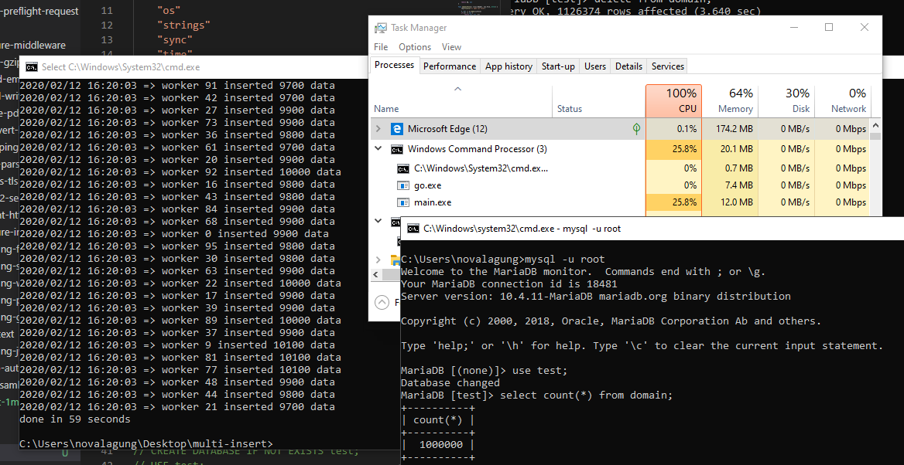

D.1. Insert 1 Juta Rows CSV ke Database Secara Konkuren/Parallel
Pada chapter ini kita akan praktik penerapan salah satu teknik concurrent programming di Go yaitu worker pool, dikombinasikan dengan database connection pool, untuk membaca 1 juta rows data dari sebuah file CSV untuk kemudian di-insert-kan ke MySQL server.
Pada bagian insert data kita terapkan mekanisme failover, jadi ketika ada operasi insert gagal, maka akan otomatis di-recover dan di-retry. Idealnya di akhir, semua data sejumlah satu juta akan berhasil di-insert.
D.1.1. Penjelasan
◉ Worker Pool
Worker pool adalah teknik manajemen goroutine dalam concurrent programming pada Go. Sejumlah worker dijalankan dan masing-masing memiliki tugas yang sama yaitu menyelesaikan sejumlah jobs.
Dengan metode worker pool ini, penggunaan memory dan performa program bisa lebih optimal dibanding menjalankan satu goroutine per job (yang bisa mencapai 1 juta goroutine sekaligus).
◉ Database Connection Pool
Connection pool adalah metode untuk manajemen sejumlah koneksi database agar bisa digunakan secara optimal.
Connection pool sangat penting dalam kasus operasi data yang berhubungan dengan database di mana concurrent programming diterapkan. Karena beberapa proses berjalan bersamaan, penggunaan 1 koneksi saja akan menghambat proses tersebut. Dengan beberapa koneksi dalam pool, goroutine tidak perlu rebutan satu objek koneksi.
Go mengelola connection pool secara otomatis lewat package database/sql. Kita cukup atur batas maksimum koneksi via SetMaxOpenConns() dan SetMaxIdleConns().
◉ Failover
Failover merupakan mekanisme backup ketika sebuah proses gagal. Pada konteks ini, failover mengarah ke proses untuk me-retry operasi insert ketika ada error, hingga insert berhasil.
D.1.2. Persiapan
File majestic-million-csv digunakan sebagai bahan dalam praktik. File tersebut gratis dengan lisensi CCA3. Isinya adalah list dari top website berjumlah 1 juta.
Silakan download file-nya di sini: http://downloads.majestic.com/majestic_million.csv.
Setelah itu siapkan MySQL database server, buat database dan tabel domain di dalamnya.
CREATE DATABASE IF NOT EXISTS test;
USE test;
CREATE TABLE IF NOT EXISTS domain (
GlobalRank int,
TldRank int,
Domain varchar(255),
TLD varchar(255),
RefSubNets int,
RefIPs int,
IDN_Domain varchar(255),
IDN_TLD varchar(255),
PrevGlobalRank int,
PrevTldRank int,
PrevRefSubNets int,
PrevRefIPs int
);
Setelah itu buat project baru dengan satu file main.go, dan tempatkan file CSV yang sudah didownload dalam folder yang sama.
Karena contoh ini menggunakan MySQL, perlu install driver-nya terlebih dahulu.
go get -u github.com/go-sql-driver/mysql
D.1.3. Praktik
◉ Definisi Variabel
Ada beberapa variabel konfigurasi yang perlu dipersiapkan.
var (
dbConnString = "root@/test"
dbMaxIdleConns = 4
dbMaxConns = 100
totalWorker = 100
csvFile = "majestic_million.csv"
dataHeaders = []string{
"GlobalRank", "TldRank", "Domain", "TLD",
"RefSubNets", "RefIPs", "IDN_Domain", "IDN_TLD",
"PrevGlobalRank", "PrevTldRank", "PrevRefSubNets", "PrevRefIPs",
}
)
dbConnStringadalah connection string ke MySQL. Sesuaikan dengan konfigurasi lokal.dbMaxIdleConnsadalah jumlah koneksi idle yang diizinkan dalam pool.dbMaxConnsadalah jumlah maksimum koneksi aktif dalam pool.totalWorkeradalah jumlah goroutine worker yang akan berjalan bersamaan.csvFileadalah nama file CSV yang berada satu folder denganmain.go.dataHeadersadalah nama kolom tabel, sesuai urutan kolom di CSV (setelah baris header dilewati).
◉ Fungsi Buka Koneksi Database
func openDbConnection() (*sql.DB, error) {
log.Println("=> open db connection")
db, err := sql.Open("mysql", dbConnString)
if err != nil {
return nil, err
}
db.SetMaxOpenConns(dbMaxConns)
db.SetMaxIdleConns(dbMaxIdleConns)
return db, nil
}
sql.Open() tidak langsung membuka koneksi, ia hanya memvalidasi argumen dan mempersiapkan pool. Koneksi aktual baru dibuka saat pertama kali digunakan. SetMaxOpenConns() dan SetMaxIdleConns() mengatur batas pool agar tidak membebani server database.
Jangan lupa import driver-nya secara blank import agar side effect registrasinya berjalan.
import _ "github.com/go-sql-driver/mysql"
◉ Fungsi Baca CSV
func openCsvFile() (*csv.Reader, *os.File, error) {
log.Println("=> open csv file")
f, err := os.Open(csvFile)
if err != nil {
if os.IsNotExist(err) {
log.Fatal("file majestic_million.csv tidak ditemukan. silakan download terlebih dahulu di https://blog.majestic.com/development/majestic-million-csv-daily")
}
return nil, nil, err
}
reader := csv.NewReader(f)
return reader, f, nil
}
Fungsi ini membuka file CSV dan mengembalikan objek *csv.Reader untuk dibaca baris per baris, plus objek *os.File agar bisa di-close oleh pemanggil. Pengecekan os.IsNotExist() memberikan pesan error yang lebih informatif jika file belum didownload.
◉ Fungsi Menjalankan Workers
func dispatchWorkers(db *sql.DB, jobs <-chan []interface{}, wg *sync.WaitGroup) {
for workerIndex := 0; workerIndex < totalWorker; workerIndex++ {
go func(workerIndex int, db *sql.DB, jobs <-chan []interface{}, wg *sync.WaitGroup) {
counter := 0
for job := range jobs {
doTheJob(workerIndex, counter, db, job)
wg.Done()
counter++
}
}(workerIndex, db, jobs, wg)
}
}
Fungsi ini men-dispatch sejumlah totalWorker goroutine. Setiap goroutine adalah satu worker yang terus memantau channel jobs. Saat ada data masuk, worker mengambil dan memprosesnya lewat doTheJob(). Setelah selesai, wg.Done() dipanggil untuk menandai satu job selesai.
Perlu diperhatikan bahwa workerIndex dijadikan argumen goroutine, bukan di-capture langsung dari loop. Ini penting agar tiap goroutine mendapat nilai workerIndex yang tepat, bukan nilai terakhir dari perulangan.
◉ Fungsi Baca CSV dan Pengiriman Jobs ke Worker
Proses membaca file CSV bersifat sekuensial, baris demi baris dari atas ke bawah. Ini memang tidak bisa di-konkurensikan, karena csv.Reader membaca stream secara berurutan.
func readCsvFilePerLineThenSendToWorker(csvReader *csv.Reader, jobs chan<- []interface{}, wg *sync.WaitGroup) {
isHeader := true
for {
row, err := csvReader.Read()
if err != nil {
if err == io.EOF {
err = nil
}
break
}
if isHeader {
isHeader = false
continue
}
rowOrdered := make([]interface{}, 0)
for _, each := range row {
rowOrdered = append(rowOrdered, each)
}
wg.Add(1)
jobs <- rowOrdered
}
close(jobs)
}
Baris pertama CSV adalah header, dilewati dengan flag isHeader. Baris selanjutnya dikonversi ke []interface{} dan dikirim ke channel jobs. Setiap pengiriman dibarengi wg.Add(1) agar WaitGroup tahu ada satu job baru yang harus ditunggu.
Setelah semua baris terbaca (loop selesai), channel jobs di-close. Penutupan ini yang menyebabkan semua worker keluar dari for job := range jobs setelah job terakhir selesai diproses.
◉ Fungsi Insert Data ke Database
func doTheJob(workerIndex, counter int, db *sql.DB, values []interface{}) {
for {
var outerError error
func(outerError *error) {
defer func() {
if err := recover(); err != nil {
*outerError = fmt.Errorf("%v", err)
}
}()
conn, err := db.Conn(context.Background())
if err != nil {
*outerError = err
return
}
defer conn.Close()
query := fmt.Sprintf("INSERT INTO domain (%s) VALUES (%s)",
strings.Join(dataHeaders, ","),
strings.Join(generateQuestionsMark(len(dataHeaders)), ","),
)
_, err = conn.ExecContext(context.Background(), query, values...)
if err != nil {
*outerError = err
return
}
}(&outerError)
if outerError == nil {
break
}
log.Println("=> retrying insert, error:", outerError)
}
if counter%100 == 0 {
log.Println("=> worker", workerIndex, "inserted", counter, "data")
}
}
func generateQuestionsMark(n int) []string {
s := make([]string, 0)
for i := 0; i < n; i++ {
s = append(s, "?")
}
return s
}
Beberapa hal penting dalam fungsi ini:
- Keseluruhan operasi insert dibungkus dalam IIFE (immediately invoked function expression) di dalam perulangan
for. Ini adalah implementasi mekanisme failover: jika insert gagal (outerError != nil), perulangan lanjut dan operasi diulang. defer func() { recover() }()menangkap panic yang mungkin terjadi dari dalam IIFE dan mengonversinya ke error biasa, agar bisa ditangani oleh mekanisme retry.db.Conn()mengambil satu koneksi dari pool. Error dari pemanggilan ini perlu dicek, karena jika pool penuh dan semua koneksi sedang dipakai, pemanggilan ini bisa gagal.defer conn.Close()mengembalikan koneksi ke pool setelah IIFE selesai, baik sukses maupun gagal.- Query dibentuk secara dinamis menggunakan
dataHeadersdan placeholder?sejumlah kolom. Penggunaan placeholder (parameterized query) ini penting untuk menghindari SQL injection.
Catatan: Mekanisme retry di atas tidak memiliki batas percobaan dan tidak ada jeda antar retry. Jika database tidak dapat diakses dalam waktu lama, goroutine akan terus looping tanpa henti. Untuk kebutuhan produksi, tambahkan batas maksimum retry dan exponential backoff.
◉ Fungsi Main
func main() {
start := time.Now()
db, err := openDbConnection()
if err != nil {
log.Fatal(err.Error())
}
csvReader, csvFile, err := openCsvFile()
if err != nil {
log.Fatal(err.Error())
}
defer csvFile.Close()
jobs := make(chan []interface{}, 0)
wg := new(sync.WaitGroup)
go dispatchWorkers(db, jobs, wg)
readCsvFilePerLineThenSendToWorker(csvReader, jobs, wg)
wg.Wait()
duration := time.Since(start)
fmt.Println("done in", int(math.Ceil(duration.Seconds())), "seconds")
}
Alur eksekusinya adalah:
- Buka koneksi database.
- Buka file CSV.
- Buat channel
jobsdan WaitGroup. dispatchWorkers()dijalankan sebagai goroutine agar langsung siap menunggu jobs.readCsvFilePerLineThenSendToWorker()dijalankan di goroutine utama (blocking): membaca CSV baris demi baris dan mengirim kejobs.wg.Wait()menunggu seluruh 1 juta insert selesai sebelum program berhenti.
Channel
jobsdi sini dibuat tanpa buffer (make(chan []interface{}, 0)). Artinya setiap pengiriman baris CSV akan memblokir sampai ada worker yang mengambilnya. Jika ingin mengurangi kemungkinan reader memblokir terlalu lama, bisa gunakan buffered channel, misalnyamake(chan []interface{}, 500).
D.1.4. Eksekusi Program
Setelah semua siap, jalankan program-nya.

Bisa dilihat operasi insert selesai dalam waktu sekitar 1 menit. Pengujian dilakukan pada laptop dengan spesifikasi berikut:
- Core i7-8750H 2.20GHz (6 core, 12 logical processor)
- RAM 16GB
- SSD
Utilisasi CPU hanya 25.8% dan RAM hanya 12MB untuk sisi program Go-nya. CPU usage di Task Manager mencapai 100% karena MySQL server lokal yang bekerja keras melayani 100 koneksi insert secara bersamaan.
Sebagai perbandingan, operasi insert yang sama secara sekuensial (tanpa worker pool dan tanpa connection pool) memakan waktu hingga 20 menit. Perbedaan performa ini menunjukkan betapa signifikannya penerapan konkurensi untuk kasus seperti ini.
Praktik pada chapter ini bersifat POC (Proof of Concept). Untuk kebutuhan produksi, pertimbangkan batched insert (insert beberapa baris dalam satu query), mekanisme retry dengan backoff, serta monitoring terhadap jumlah koneksi database yang aktif.
- go-sql-driver/mysql, by Go SQL Driver Team, Mozilla Public License 2.0